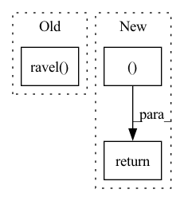

Pattern ID :12157

Before Change
gx.strides[3], gx.strides[4]),
writeable=False,
)
tx = np.ravel(tx).reshape(tx.shape)
tw = w.reshape(ctx.groups, rcout, cin, H, W)
ctx.save_for_backward(tx, tw, x.shape)
return np.einsum("igjYXyx,gkjyx -> igkYX", tx, tw).reshape(bs, cout, oy, ox)
After Change
tw = w.reshape(ctx.groups, rcout, cin, H, W)
ctx.save_for_backward(tx, tw, x.shape)
//ret = np.einsum("igjYXyx,gkjyx -> igkYX", tx, tw).reshape(bs, cout, oy, ox)
ret = np.zeros((bs,ctx.groups,rcout,oy,ox),dtype=x.dtype)
for g in range(ctx.groups):
//ijYXyx,kjyx -> iYXk ->ikYX
ret[:,g]+=np.moveaxis(np.tensordot(tx[:,g], tw[g],((1,4,5),(1,2,3))),3,1)
return ret.reshape(bs, cout, oy, ox)
@staticmethod
In pattern: SUPERPATTERN
Frequency: 3
Non-data size: 3
Instances
Fragment ID: 41014496
Project Name: geohot/tinygrad
Commit Name: af5a4e0f5a3be62bd29e0220e1acee09be808645
Time: 2020-11-02
Author: 65973015+marcelbischoff@users.noreply.github.com
File Name: tinygrad/ops.py
M Class Name: Conv2D
N Class Name: Conv2D
M Method Name: forward(5)
N Method Name: forward(5)
M Parent Class: Function
N Parent Class: Function
M File Name: tinygrad/ops.py
N File Name: tinygrad/ops.py
M Start Line: 175
M End Line: 185
N Start Line: 172
N End Line: 189
'>
Before Change
if size is None:
return qrvs[0, 0]
else:
return qrvs.ravel()
def _fni_input_validation(dist, tol, max_intervals):
if int(max_intervals) != max_intervals or max_intervals <= 1:
After Change
if d == 1:
return qrvs.reshape(tuple_size)
else:
return qrvs.reshape(tuple_size + (d,))
def _fni_input_validation(dist, tol, max_intervals):
'>
Fragment ID: 41014493
Project Name: scipy/scipy
Commit Name: d4711a6fc3193ec56a54971ab78d15a7d3aff769
Time: 2021-04-30
Author: mhaberla@calpoly.edu
File Name: scipy/stats/_rvs_sampling.py
M Class Name: FastNumericalInverse
N Class Name: FastNumericalInverse
M Method Name: qrvs(4)
N Method Name: qrvs(3)
M Parent Class:
N Parent Class:
M File Name: scipy/stats/_rvs_sampling.py
N File Name: scipy/stats/_rvs_sampling.py
M Start Line: 374
M End Line: 394
N Start Line: 349
N End Line: 442
'>
Before Change
y_test = dataset.prepare("test", col_set="label")
pred_score, y_test, __ = drop_nan_by_y_index(pred_score, y_test)
model_pearsonr = pearsonr(np.ravel(pred_score.values), np.ravel(y_test.values))[0]
return pred_score, {"model_pearsonr": model_pearsonr}, rid
After Change
ic = sar.load(sar.get_path("ic.pkl"))
ric = sar.load(sar.get_path("ric.pkl"))
return pred_score, {"ic": ic, "ric": ric}, rid
def backtest_analysis(pred, rid):
backtest and analysis
'>
Fragment ID: 41014495
Project Name: microsoft/qlib
Commit Name: 89586562226b1f3aaf4b38ef283af92ffe105e71
Time: 2020-11-21
Author: dw1920@nyu.edu
File Name: tests/test_all_pipeline.py
M Class Name: AnonimousClass
N Class Name: AnonimousClass
M Method Name: train(0)
N Method Name: train(0)
M Parent Class:
N Parent Class:
M File Name: tests/test_all_pipeline.py
N File Name: tests/test_all_pipeline.py
M Start Line: 112
M End Line: 130
N Start Line: 119
N End Line: 131